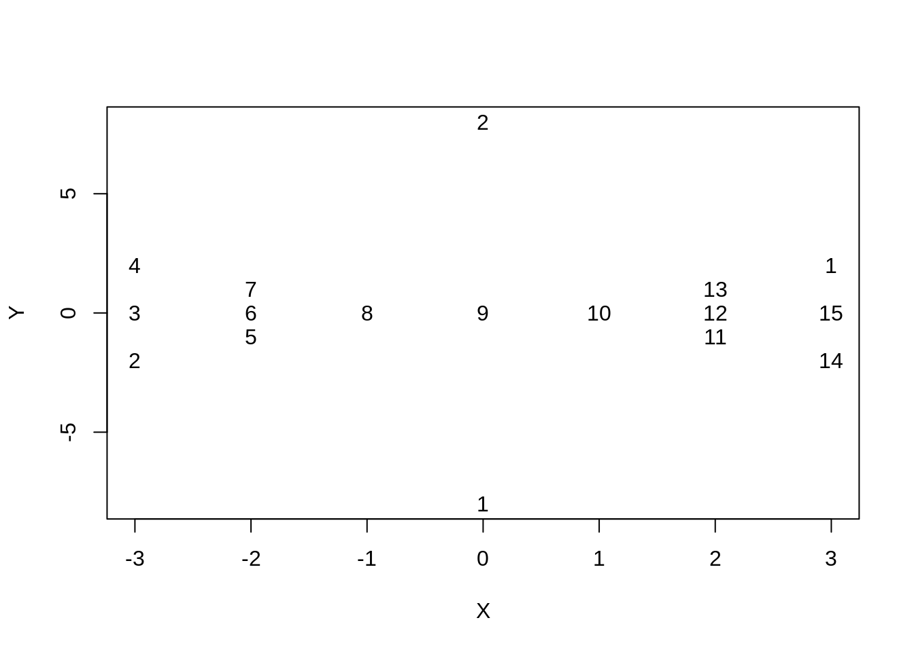
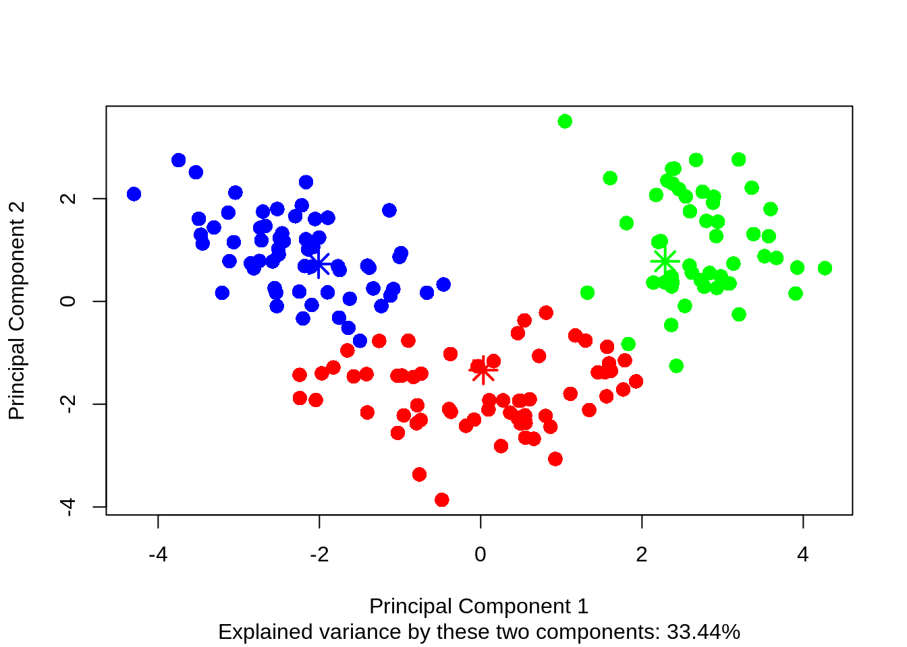

En el clustering jerárquico y no jerárquico cada unidad pertenecia a un solo cluster. En el Fuzzy clustering esto no es así. Notemos el siguiente gráfico donde la unidad 8 está entre dos clusters
library(datasetsICR)
data("butterfly")
plot(butterfly , type = "n")
text(butterfly, labels=1:15)
El clustering Fuzzy consiste en asignar cada unidad a clusters con grados de pertenencia (difusos) tomando valores en el intervalo [0, 1]
El propósito del algoritmo Fuzzy K-means (FKM o FCM) es encontrar la mejor partición fuzzy de \(n\) unidades en \(k\) clusters. El parámetro \(m\) se utiliza para ajustar la borrosidad de la partición obtenida (\(m> 1\))
\[\min_{U,H} J_{FKM} = \sum_{i=1}^n\sum_{g=1}^k u_{ig}^md^2(\bf{x}_i,\bf{h}_g)\]
\[ST\hspace{1cm} u_{ig}\in[0,1], \hspace{1cm}i=1,2\cdots,n \hspace{0.5cm} g=1,2,\cdots,k\]
\[\sum_{g=1}^k u_{ig}=1,\hspace{0.5cm}i=1,2,\cdots,n\]
\(U\) sigue siendo la matriz de pertenencia al cluster, sin embargo ahora cada fila en cada columna tiene un valor entre 0 y 1, el cual mide el valor de pertenencia al cluster.
Se escoge la matriz \(U\) de forma aleatoria
Dado \(U\), se calcula la matriz de centroides \(H\)
\[\bf{h}_g = \frac{\sum_{i=1}^n u_{ig}^m \bf{x}_i}{\sum_{i=1}^n u_{ig}^m}\]
\[u_{ig}= \frac{1}{\sum_{g'=1}^k\left( \frac{d^2(x_i,h_g)}{d^2(x_i,h_{g'})}\right)^{1/(m-1)}}\] 4. Repetir 2 y 3.
Existen tres metodos de convergencia
\[\vert\vert U^{(r+1)}-U^{(r)}\vert\vert < \epsilon\]
\[\vert\vert H^{(r+1)}-H^{(r)}\vert\vert < \epsilon\]
\[\vert J^{(r+1)}-J^{(r)}\vert < \epsilon\]
Considerando la norma Frobenius.
Para medir la calidad del cluster existen diversas medidas.
\[PC = \sum_{i=1}^n\sum_{g=1}^k\frac{u_{ig}^2}{n}\] Se prueba para distintos \(k\) y se elige el \(k\) correspondiente al máximo \(PC\) como el óptimo.
\[PE=-\sum_{i=1}^n\sum_{g=1}^k \frac{u_{ig}log(u_{ig})}{n}\]
En este caso probamos para distintos \(k\) y se elige el \(k\) correspondiente al mínimo \(PE\) como el óptimo.
Xie and Beni (XB)
Fuzzy Silhouette (FS)
library(datasetsICR)
data ("wine")
Class <- wine$Class
wine <- wine[,-1]Utilizamos la función FKM de la libreria flcust. stand= 1 permite estandarizar los datos. El algoritmo decide el número óptimo de clusters, por defecto utiliza la medida Fuzzy Silhouette para elegir.
library(fclust)
wine.FKM <- FKM(X=wine,stand=1,RS=10,seed = 264)## The default value k=2:6 has been set
## The default index SIL.F has been set
## The default value alpha=1 has been set for computing SIL.FNumero de clusters obtenidos
wine.FKM$k## Number of clusters
## 4wine.FKM$criterion## SIL.F k=2 SIL.F k=3 SIL.F k=4 SIL.F k=5 SIL.F k=6
## 0.4996776 0.5466120 0.5638547 0.5061594 0.2432936Si cambiamos el criterio podriamos obtener otro número óptimo de clusters.
wine.FKM_pc <- FKM(X=wine,stand=1,RS=10, index='PC', seed = 264)## The default value k=2:6 has been setwine.FKM_pc$k## Number of clusters
## 2wine.FKM_xb <- FKM(X=wine,stand=1,RS=10, index='XB', seed = 264)## The default value k=2:6 has been setwine.FKM_xb$k## Number of clusters
## 3table(Class,wine.FKM_xb$clus[, 1])##
## Class 1 2 3
## 1 0 0 59
## 2 65 3 3
## 3 0 48 0Notemos que la clase 2 tiene 3 valores erroneos en el cluster 2. Veamos los grados de pertenencias.
Identificamos los valores erroneos
i_mc1 <- which( Class == 2 & wine.FKM_xb$clus[,1]== 2)
i_mc1## Obj 62 Obj 84 Obj 119
## 62 84 119Veamos los grados de pertenencia. Notemos que el objeto 62 y el objeto 119 tienen un grado de pertenencia menor a 0.5, por lo que no son claros.
wine.FKM_xb$U[i_mc1 , ]## Clus 1 Clus 2 Clus 3
## Obj 62 0.3790068 0.4398723 0.1811209
## Obj 84 0.2625264 0.6149427 0.1225309
## Obj 119 0.3696357 0.4726816 0.1576827plot.fclust( x = wine.FKM_xb , pca = TRUE )
wine.Z <- scale(wine , center = TRUE , scale = TRUE)set.seed(264)
library(e1071)
wine.Z.cmeans.3<-cmeans(wine.Z,3)wine.Z.cmeans.3$size## [1] 62 51 65Notemos que las particiones coinciden.
table(wine.FKM_xb$clus[, 1] , wine.Z.cmeans.3$cluster)##
## 1 2 3
## 1 0 0 65
## 2 0 51 0
## 3 62 0 0Otra función es fcm del paquete ppclust. Tambien existe la función fuzzy.CM del paquete advclust